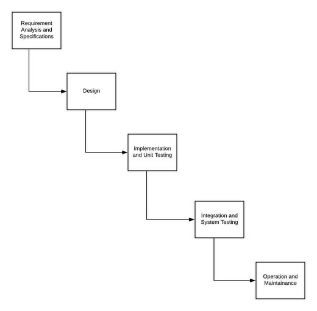
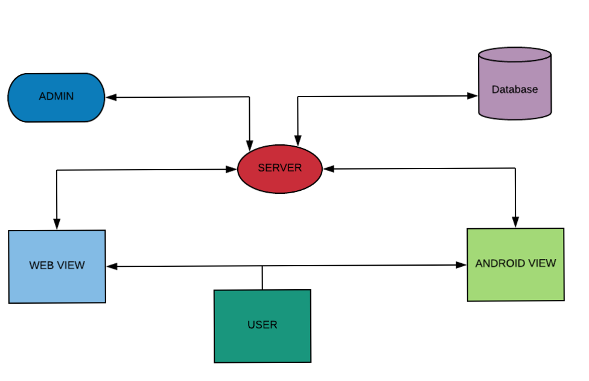

2.0 Architectural Pattern
2.1 Approach
The system is developed following waterfall model life cycle. The steps are
requirement analysis,design, implementation and unit testing, integration and
system testing and lastly maintenance. The system will be developed under super
vision and rigorous testing to avoid bugs and meet the desired result.
2.2 Diagram

Figure 2.2: Work Flow Diagram
Figure 2.2: Work Flow Diagram
2.2.1 Design Diagram
It has a common database for android app and website that can be accessed through server remotely to search, view and update.

Figure 2.2.1: Design Diagram
Figure 2.2.1: Design Diagram
2.2.2 Design Pattern
We are using MVC (MODEL-VIEW-CONTROLLER) design pattern provided by Laravel framework. MVC helps in avoiding mixture of code from different classes designed.
• The model component- Handles the data and data flow of the system and performs various operations on data.
• The view component- This component is responsible for how the data is represented to the user and how they interact with the data.
• The controller component- Manages user interaction and passes these interaction to the view and the model.
There are various ways in which to visualize and interact with system data. Same data can be represented differently based on different scenarios. Also when we will need to change the view of any specific part of the system, changing the view will suffice rather we would have to change the whole thing along with data. This will also make code more manageable as the various components are separated and in the same time inter-connected to ensure the date flow, connectivity between the components and full functionality of the system.
• The model component- Handles the data and data flow of the system and performs various operations on data.
• The view component- This component is responsible for how the data is represented to the user and how they interact with the data.
• The controller component- Manages user interaction and passes these interaction to the view and the model.
There are various ways in which to visualize and interact with system data. Same data can be represented differently based on different scenarios. Also when we will need to change the view of any specific part of the system, changing the view will suffice rather we would have to change the whole thing along with data. This will also make code more manageable as the various components are separated and in the same time inter-connected to ensure the date flow, connectivity between the components and full functionality of the system.